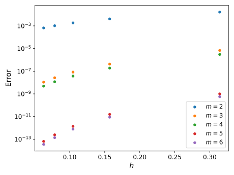
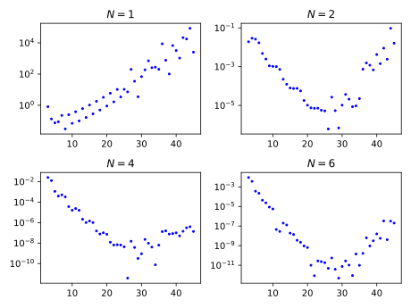

Newton-Cotes method - implementation
How to implement?
I wrote a very basic implementation of the Newton-Cotes method to arbitrary order in Python. In this section, I will go over (not in too much detail) how it all works.
First order of business, the user will need to specify the order of the Newton-Cotes method. This order is defined in the theory section, and equals 1 for trapezium, 2 for Simpson etc. Given an order, we need a function that calculates the weights. Here it is:
def find_coefficients(order): nodes = np.linspace(0,1,num=order) M = [np.ones(order)] for k in range(order-1): M.append(np.multiply(M[k], nodes)) M = np.array(M) return np.linalg.solve(M, np.array([1/(k+1) for k in range(order)]))
Note: in the implementation, the variable called order is one greater than the order parameter in the theory, so as far as the code is concerned the order of trapezium rule is 2, Simpson is 3 etc. This offset is an accident on my part and I am too lazy to fix it.
find_coefficients works as follows: first we create equally spaced nodes along the interval \([0,1]\), including the endpoints. Next, we write down the equation determining weights in matrix form, where M is the square matrix of coefficients. Finally, we simply solve the matrix equation to obtain the unique solution for the weights, simple as that!
To compute the integral, we simply sum over sub-invervals with the weights provided by the find_coefficients function, with a simple version shown below. Immediately one can notice that I am summing over the boundaries of the sub-intervals twice over - which is inefficient as the number of sub-intervals is increased. But the function itself is pretty self explanatory.
def newton_cotes(f, a, b, N, order=3, args=()): """ f(x, *args): function to be integrated. a: lower limit of integration. b: upper limit of integration. N: number of intervals dividing (b-a). order: the order of the particular Newton-Cotes method. """ intervals = np.linspace(a,b,num=N) h = (b-a)/N coeff = find_coefficients(order) nodes = np.linspace(0,1,num=order) I = 0 for k in range(N): for c, n in zip(coeff,nodes): I += c*f(a+h*(k+n),*args) return h*I
Test 1: Error bound order
Let's test our theory and implementation. We know how to calculate the scaling of the error bound in interval length \(h\), and here is a function that does it:
def find_error_order(coeff): """ coeff: coefficients defining the particular Newton-Cotes method. Returns the order of the error bound given a set of Newton-Cotes coefficients. e.g. 2 for trapezium, 4 for Simpson's etc. Operationally, finds the maximum number of coefficient equations that are satisfied by the particular choice of coefficients. """ order = len(coeff) m = order nodes = np.linspace(0,1,num=order) betas = np.power(nodes, order*[m]) while np.sum(np.multiply(betas, coeff)) - 1 / (m+1) < 1e-6: m += 1 betas = np.power(nodes, order*[m]) return m
Using this, we can choose a simple test function, say \(\sin(x)\), and an interval, say \([0,\pi]\), and integrate using Newton-Cotes to different orders and see the jumps as the error order is increased.
Below I have plotted the error as a function of the step size, for different orders of the Newton-Cotes method. The order is denoted \(m\), with \(m=2,3\) the trapezium and Simpson rules. Note the logarithmic scale on the error axis.
We see that, as expected from theory, the error orders are grouped up in pairs. It would be interesting to compute the exact error coefficient and compare the error bound to the actual error for different types of functions.
Test 2: Runge's phenomenon
Consider the function
called the Runge function. Immediately, the analytic properties of this function is clearly different than the previous example \( sin(x) \). Namely, this function has poles at \(x = \pm i / 5\). This may not seem relevant, after all we are considering real integrals. However, the complex analytic properties of a function is extremely relevant, as the radius of convergence of the Taylor series will be crucial in what follows.
Let's first do a numerical experiment, and integrate the Runge function over the interval \([-1,1]\) and plot the error as a function of Newton-Cotes order. And to be extra cautios, let's also consider different values of \(N\). The result is plotted below.
Note again the logarithmic scale on the error axis. We see, for all values of \(N\) considered above, that the error starts growing with order at large orders. Increasing \(N\) delays the order after which the error starts to grow, but doesn't prevent it.
So, what went wrong with our theory? Nothing! The theory says the error at order \(n\) over interval \([a,b]\) is bounded by:
where \(M_{n+1}\) is the bound on the \((n+1)\)st derivative of the function. Finding the upper bound on the \(n\)th derivative of the Runge function isn't too difficult, one gets a series of terms with alternating signs. Hence, it suffices to look at term with the most unstable growth:
The maximum of this function is rougly at \( 1 = 25 x^2 \), and so we set \(M_{n} = 5^n n!\). The error is therefore bounded by \((b-a)h^n 5^n\). Of course, this is an upper bound and so it doesn't by itself imply the error should diverge. But it shows that the divergence, caused by the factorial growth of the derivatives of the function, is consistent with the theory.
Test 3: Lagrange interpolation
First, we write a function which returns the Lagrange interpolating polynomial, given a function and a set of nodes. A simple implementation is the following pair of functions:
def lagrange_polynomial(x, f, nodes, args=()): """ x: argument of the polynomial f: function to be interpolated nodes: interpolation nodes args: additional arguments to be passed to f """ # Initialise the polynomial L L = 0 # Iterate over the nodes, computing the corresponding basis polynomial and adding to L for xj, j in zip(nodes, range(len(nodes))): L += f(xj,*args)*lagrange_basis(x, j, nodes) return L def lagrange_basis(x, j, nodes): """ x: argument of the basis polynomial j: index of the basis polynomial nodes: interpolation nodes """ # Initialise the basis polynomial as 1, since it is given by a product of terms. l = 1 # Single out the jth node xj = nodes[j] # Iterate over all but the jth node, multiplying l with the appropriate factor for xm in np.delete(nodes, j): l *= (x-xm) / (xj-xm) return l